Device Hub：真机和模拟器，一个窗口
- 取代 Simulator.app，随 Xcode 27 安装，不开 Xcode 也能用
- Apple 的说法：「All the convenience of the simulator with the fidelity of real hardware in a single place.」SOTU 48:49
- 运行到模拟器时自动弹出；也可从运行目标菜单「Manage Devices…」打开
理念
01一处
- 真机、模拟器一个列表
- 同一套操作
02先轻后全
- 默认只有屏幕和几个键
- 要更多再展开
03控件跟着设备变
- 手表有表冠，电视有遥控
- 外框上的按键能点
04人、脚本、Agent 共用
- 界面、命令行、Agent 调同一套设备能力 推断
为什么现在做
场景：组合太多，工具太散
技术：Agent 要自己验
- Xcode 27 的 Agent 能起模拟器、点按、截图，自己检查 UI
- 真机和模拟器的底层已统一，界面和命令行同源 260 15:55
- 重做画面与输入，追求「highest fidelity」SOTU 48:22
平台：尺寸会变，形态变多
- iPhone 应用在 iPad、iPhone 镜像里可任意改大小 278 6:50
- 手表、电视、Vision Pro、CarPlay，27.1 又加 iPhone Duo
- iOS 27 起手机、平板能无线配对
竞争：别人早有，第三方先补
- Android Studio 早把模拟器、真机镜像放进 IDE 社区
- RocketSim、ControlRoom 先补了截图、外观、位置 社区
- AI 编码工具都在驱动模拟器，设备层成了基础设施 推断
场景Apple 演示的三个任务流
S1 · 写完就跑，顺手查外观258 9:54
- 运行 → 弹出紧凑窗，贴合设备大小
- 回主屏、截图、旋转
- 展开 → 调对比度、字号、深色
- 拖边改尺寸（iPhone 镜像能缩放了）
- 侧栏点开桌上的 iPad 真机，直接操作
S2 · 让 Agent 替你点一遍SOTU 53:37
- Agent 写完新功能
- 自己拉起 App 和 Device Hub
- 点、滑、打字，测各种组合
- 交回测试小结 + 一路截图
S3 · 真机发现，模拟器复现260 8:08–15:24
发现的人
- 无线配对手表，输 PIN
- 拖入日志描述文件
- 在 Mac 上操作真机，转横屏，文字被截断
- 截图、抓 sysdiagnose、复制出错的文字
- 导出 App 数据，发给同事
复现的人
- 选同型号模拟器
- 换上同事的 App 数据
- 对着截图对齐：横屏 → 位置 → 字号
- 三项都对上才复现
体验上的断点：配置要人对着截图一项项猜，没有「把那台设备的配置整套搬过来」 推断
交互特点交互 → 给谁 → 解决什么
| 交互 | 给谁 | 解决什么 |
|---|---|---|
| 紧凑窗默认弹出 | 每天跑 App 的人 | 只看结果，不被工具淹没 |
| 一键展开三栏 | 要排查、改配置的人 | 设备、操作、配置不再分三处 |
| 控件随设备变 | 做手表、电视、Vision Pro 的人 | 不用记各平台的模拟方式 |
| 画布上直接点、拖、捏 | UI 工程师 | 不用伸手拿真机，注意力不跑 |
| 真机画面进窗口 | 要真机保真的人 | 真机和模拟器一样操作 |
| 拖边改尺寸 | 做自适应布局的人 | 不用开好几台模拟器 |
| 设置即改即见 | 无障碍、多语言、UI | 不用进设备设置里翻 |
| 诊断报告一页看 | 查崩溃、卡顿的人 | 日志不再散在各处 |
| 导出 / 换上 App 数据 | 跨人复现、测试 | 复现不再缺数据 |
| 多选、双击、并排 | 适配多尺寸的人 | 不用来回切、凭记忆比 |
| 无线配对 | 用真机的人 | 不插线，手表配对更稳 |
| Agent 能操作设备 | 用 Agent 写 App 的人 | Agent 写完能自己验 |
截图Apple 文档配图，点开看原图

- 侧栏：所有设备；搜索、过滤、右键快捷操作
- 画布：活屏；上方缩放、1:1、键盘捕获、改尺寸
- 设备控件：主屏、截图、录屏、旋转，随设备变
- 检查器：设置 · 诊断 · 信息（设备信息 / 应用 / 描述文件）


- 四边把手，底部实时显示宽 × 高
- 右侧一屏放下外观、字号、对比度、VoiceOver、位置、声音


体验评价
做得好
- 默认轻：紧凑窗贴合设备，不抢代码区
- 一致：真机、模拟器同一套操作
- 即改即见：外观、字号、位置不用进设备设置
- 「大惊喜」，日常影响比很多新 API 更直接——Fatbobman 社区
不足
- 复现要人对着截图逐项对齐配置 推断
- 早期 beta 缺慢动画、内存警告等调试项，缩放不够精确 社区
- Vision Pro 真机看不到画面；暂不支持双指触控（已知问题）
- 依赖旧 Simulator.app 的工具要跟着改 社区
鸿蒙电脑版可参照
- 先看差别：鸿蒙电脑能本机跑应用，设备至少分三类——本机窗口、模拟器、真机（含远端、云端） 推断
- 已借过：demo 20 的设备中心有五类设备一张表、诊断包、云端 / 远端回放
- 还没借：活屏、紧凑窗、即改即见的设置、带数据的复现、共用的设备层
| 借什么 | 用在鸿蒙电脑版 | 档位 | 接哪个 demo |
|---|---|---|---|
| 三栏设备中心 | 本机窗口、模拟器、真机、远端、云端一个列表；选中即看屏、即配置 | 主攻 | 20 · 19 · 27 |
| 紧凑窗 + 情境按键 | 跑起来就弹小窗；手机、手表、车机、折叠屏各有按键 | 主攻 | 17 · 30 |
| 拖边改尺寸 | 吸附到一多断点 sm / md / lg / xl，显示断点名 人有我优 | 主攻 | 17 |
| 导出 / 换上 App 数据 | 「现场包」= 截图 + HiLog + 沙箱数据 + 设备配置，一键在模拟器复现 人有我优 | 主攻 | 20 · 27 · 28 |
| 无线配对 + 真机进窗口 | 碰一碰配对；多屏协同把手机画面放进窗口，键鼠穿越直接操作 人无我有 | 主攻 | 20 |
| 人、脚本、Agent 共用设备层 | 界面、hdc、Agent 调同一层；设备被谁占着，三处看到的一样 | 主攻 | 23 · 07 · 20 |
| 设置即改即见 | 深浅色、字号、语言、弱网一处改，真机、模拟器通用 | 跟上 | 17 · 29 |
| 多选并排 | 几台并排看，点击、滚动可同步 | 跟上 | 16 · 17 |
主攻 单独立项跟上 并进已有 demo人无我有 / 人有我优 对照 Apple
来源
- Apple
- What's new in Xcode
- WWDC26 Keynote 71:21 · State of the Union 47:36 / 53:37
- 258 What's new in Xcode 27 · 9:37
- 260 Get the most out of Device Hub
- 278 Modernize your UIKit app · 8:40
- WWDC19 Getting the Most Out of Simulator（旧做法）
- Device Hub 文档及子页
- Xcode 27 · 27.1 · 27.2 Release Notes
- 社区 · 搜索摘要，未见原文
- Michael Tsai · Xcode 27's Device Hub（汇总 Fatbobman、Troughton-Smith 等人的评价）
- Bitrise · Device Hub 与 CI/CD
- InfoQ · Xcode 27 与 DeviceHub
- expo #46757 · claude-code #95085 · sweetpad #337（工具适配）
- RocketSim · Android Studio 真机镜像
编码 Agent：对话住进编辑区，产出摆在一旁，人在关键点拍板
- 编码助手从侧边栏挪进编辑区，对话界面重做
- Apple：「not as an isolated chat interface, but as a collaborator that sees your whole project」382 2:11
- 可选 Claude Agent、Codex、Gemini；外部 Agent 也能经 MCP 调 Xcode 的工具
理念
01人定方向，Agent 做累活
- 「You drive the vision for your code」259 0:38
- 架构、设计由人定，重复的交给 Agent
02先对齐，再动手
- 计划是一等公民：可改、可批注、批准才写码
- 「Plan mode allows you to be the architect」259 7:49
03对话是工作台
- 左边对话，右边产物
- 哪里都能开新会话，多个并行
为什么现在做
场景：出码快了，计划更要紧
- 想法变功能太快，「ensuring you have the right plan ... becomes a more important step」259 8:26
- 方向错了，返工比以前更贵 推断
技术：Agent 有了 Xcode 自己的工具
- 26.3 起接入编码 Agent，27 重做交互 259 0:29
- 构建、预览、模拟器、调试都开放给 Agent
平台：系统帮忙看住文件
- macOS 27 新机制：Agent 读写文件前，内核先问 Xcode 382 15:29
- 放手给 Agent，前提是有边界
竞争：不自己造模型，把好用的请进来
- 和 Anthropic、OpenAI、Google 合作，模型自己选 382 13:36
- Android Studio 等早有 Agent 模式 社区；Apple 的差异是「回答扎根 Swift 与 Apple 框架」SOTU 49:59
场景「Xcode, agents, and you」里的两段
A · 加一个 Insights 页259 7:44
- 输入 /plan，进计划模式
- 中途追问先排队；Agent 给几个选项，人挑
- 计划是 Markdown，改完再批准
- 每处改动以 diff 出现在右侧
- Agent 自己构建、看预览，报错自己修
- 人在 iPad 模拟器（Device Hub）里看效果，再让它补测试
B · 打磨细节，两路并行259 15:02
- 每种图表各出一张预览，人挑一种
- 在 iPad 上手绘草图，当附件发给 Agent
- 在代码行上留两条行内批注
- 开本地化会话，子 Agent 并行翻译
- 同时开无障碍会话
- 随时看进度，最后人审结果
交互特点交互 → 给谁 → 解决什么
| 交互 | 给谁 | 解决什么 |
|---|---|---|
| 对话进编辑区，可另开窗格 | 边看代码边指挥的人 | 不用切屏 |
| 左对话、右产物 | 审改动的人 | diff、计划、预览、截图一处看全 |
| 计划可编辑，批准才动手 | 把关架构的人 | 动手前先对齐 |
| 草图当附件，代码行上批注 | 调细节的人 | 说不清的画出来，指不准的点出来 |
| 追问排队 | 想随时纠偏的人 | 不用等它做完再说 |
| 会话侧栏：进行中 / 等你 / 未读 | 并行多任务的人 | 一眼知道谁在等我 |
| 工具栏状态点，点一下跳过去 | 同上 | 不用挨个翻会话 |
| 按提问逐条回退 | 怕改坏的人 | 改坏了能退回 |
| 逐次授权 + 文件访问把关 | 在意安全的人 | 放手有边界 |
截图
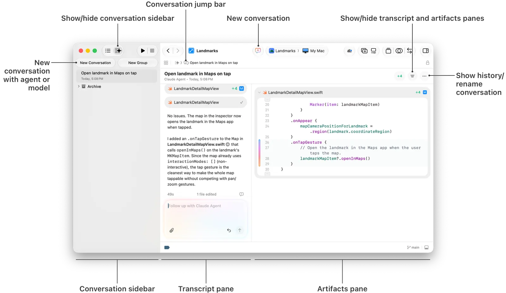
- 左：会话侧栏，新建会话 / 分组 / 归档
- 中：对话，底部输入框可加附件
- 右：产物，这里是改动的 diff；工具栏中间是「新建会话」
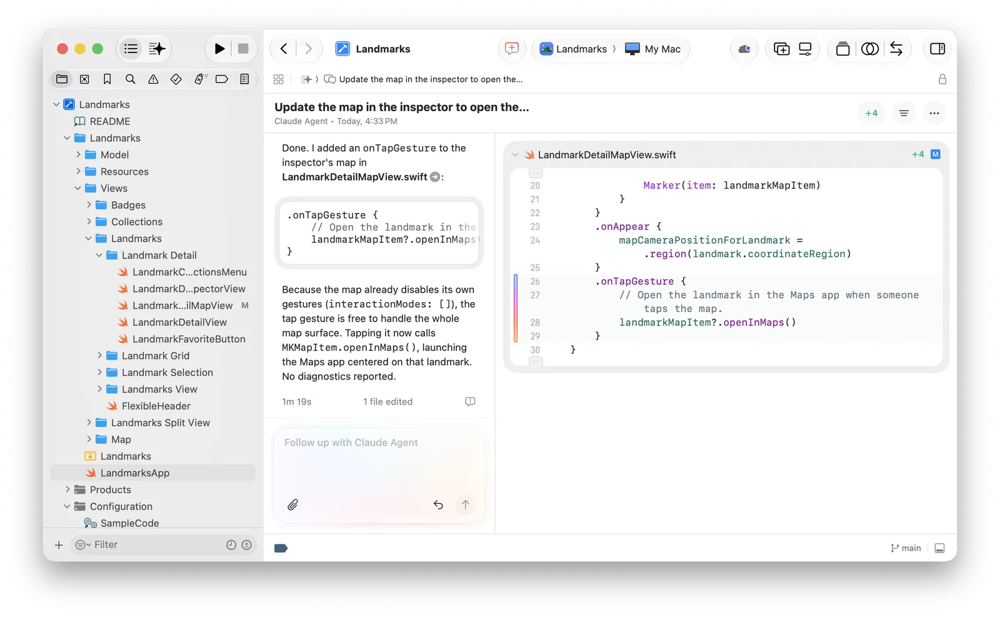
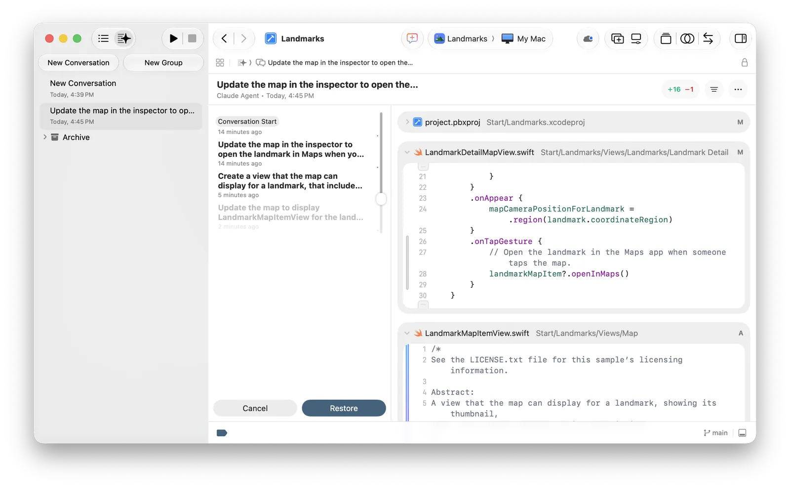
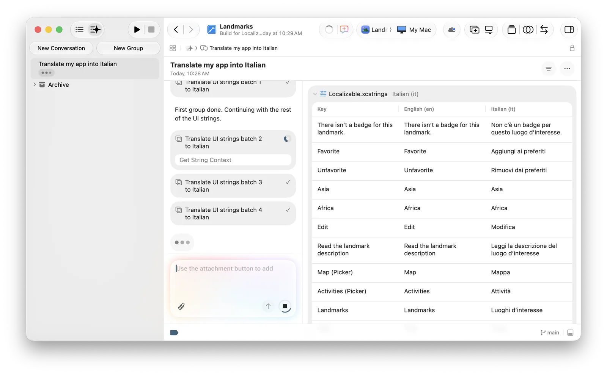
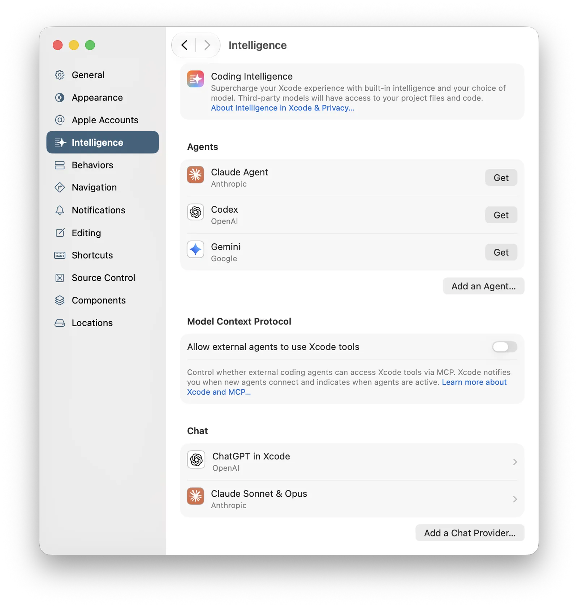
计划批准、行内批注、「等你」状态这几处 Apple 文档还没有配图，只有视频里的演示。
体验评价
做得好
- 产出有固定落点：都在右侧产物栏
- 拍板点贯穿全程：计划批准、行内批注、按提问回退
- 状态看得见：转圈是在做，警告是等你，点一下跳过去
不足
- 并行会话互不知道，改同一个文件会撞 社区
- 授权分在 Xcode 和系统设置两处 推断
- 外接的 Agent 计划只进对话、进不了产物栏，没法批注 社区
鸿蒙电脑版可参照
- 已有不少：07 统一的「在等你」队列、11 可改的计划、14 按步回退、21 胶囊、31 Agent 工作台
- 差在：产物的固定落点、计划上直接批注、草图当输入、Agent 用设备自验
| 借什么 | 用在鸿蒙电脑版 | 档位 | 接哪个 demo |
|---|---|---|---|
| 产物栏 | DevEco Code 面板右侧固定放 diff、计划、预览、真机截图；点一条落到对应位置 | 跟上 | 31 · 08 |
| 计划上直接批注 | 在计划文档上逐段批注、批准，不靠对话来回 | 跟上 | 11 |
| 草图当输入 | M-Pen 在平板或折叠屏上画，碰一碰进对话；运行中的应用上圈一块就是提问 人有我优 | 主攻 | 13 · 30 |
| Agent 用设备自验 | Agent 在本机窗口、真机上自己点、截图验 UI；设备被谁占着要看得见 | 主攻 | 17 · 20 · 07 |
| 状态点 + 跳转 | 胶囊只推最挡路的一件，点了直接落到那处（我们已做得更细） | 搭车做 | 07 · 21 |
| 文件访问把关 | Agent 只碰授权过的工程目录；授权可单独撤回 | 跟上 | 23 |
主攻 单独立项跟上 并进已有 demo搭车做 顺手改
来源
- Apple
- 259 Xcode, agents, and you
- 258 What's new in Xcode 27 · 7:40 编码 Agent
- 382 Inside Apple Intelligence and Xcode · State of the Union 49:10
- Coding intelligence 文档 · 用智能写代码 · 扩展 Agent · 外部 Agent 接入
- Xcode 27 Release Notes · Coding Intelligence
- 社区 · 搜索摘要
- AppCoda · Xcode 27
- Android Studio · Agent Mode
- Apple 开发者论坛 · 外接 Agent 的计划不进产物栏
本地化：说一句加语言，Agent 带着上下文译完，人只审改
- 「Beginning in Xcode 27, you can now translate your strings directly in Xcode using coding agents!」213 1:31
- 两个入口：对话里说一句；或在字符串目录里点「Generate Translations」
- 译文会标「机器翻译」，进度在对话和目录里都看得见
理念
01上下文由 Xcode 备好
- 「Xcode gives subagents context about each string being translated」213 3:50
- 不靠人写提示词
02人只做审阅
- Agent 批量译，人挑着改
- 一句话就能整体改译法
03术语只说一次
- 改过的译法，做新功能时自动沿用 213 7:52
- 术语表、语气写进一个文件
为什么现在做
场景：工程量大，同词异义
- 「book」是书还是预订？没有语境就会译错 213 0:47
- 抽字符串、配目录、补复数，都是体力活
技术：大模型会译，缺的是语境
- 「they can still struggle with software localization when they don't have the right context」213 0:36
- Xcode 能把用在哪、相近词条、其他语言译法一起交给 Agent
平台：市场大
- App Store 覆盖 175 个地区、50 种语言（Apple 本地化页）
- 每多一门语言就多一个市场
竞争：顺着 Agent 的主线
- 本地化是 Agent 最好讲清价值的活：量大、规则明确、好验收 推断
- Android Studio 有翻译编辑器，未见内置 Agent 翻译 社区
场景
A · 加一门语言（加拿大法语）213 2:19
- 工具栏新建会话，说「译成加拿大法语」
- Xcode 先加语言、构建、收字符串，再分批并行译
- 「%lld items」自动拆出法语的单复数
- 切语言运行；嫌某个词不对，一句话让它全改
- 做新功能时，Agent 自动沿用改过的译法
- 让 Agent 渲染法语界面查截断
B · 在目录里补一门语言（简体中文）258 14:03
- 新会话说「给工程配好本地化，先做西班牙语」
- Agent 改成可本地化的写法，建字符串目录
- 目录里「+」加简体中文
- 选中语言，点「Generate Translations」
- 后台跑，目录里逐批填表
- 跑 App 抽查，再发 TestFlight 请母语者测
交互特点交互 → 给谁 → 解决什么
| 交互 | 给谁 | 解决什么 |
|---|---|---|
| 一句话加语言 | 所有开发者 | 不用先手工配本地化 |
| 目录里一键生成译文 | 只补一门语言的人 | 不用重开对话 |
| 每条字符串带上下文 | Agent | 同词异义不乱译 |
| 复数按语言自动拆 | 审阅的人 | 不漏各语言的复数形式 |
| 对话看进度，目录实时填表 | 审阅的人 | 长任务不是黑盒 |
| 译文标「机器翻译」、新词标「NEW」 | 审阅的人 | 知道哪些还没人看过 |
| 术语表文件 | 要统一口径的团队 | 术语、语气只写一次 |
| 预览里切语言、叠大字号 | 设计师与开发者 | 译完马上看排版 |
截图
- 左：分批任务逐条打勾，正在用的工具（Get String Context）写在条目下
- 右：字符串表一行行填上意大利语
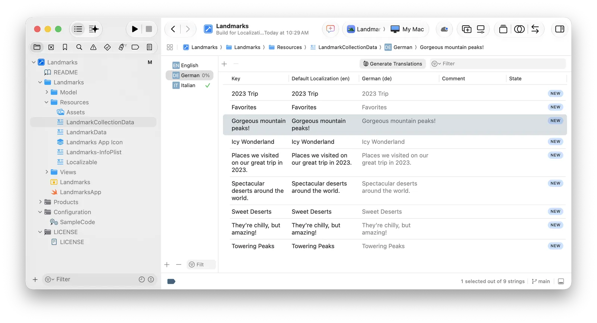
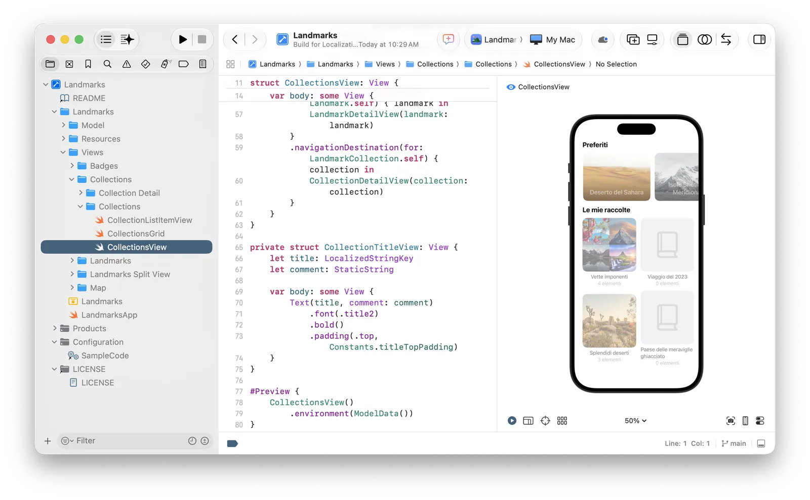
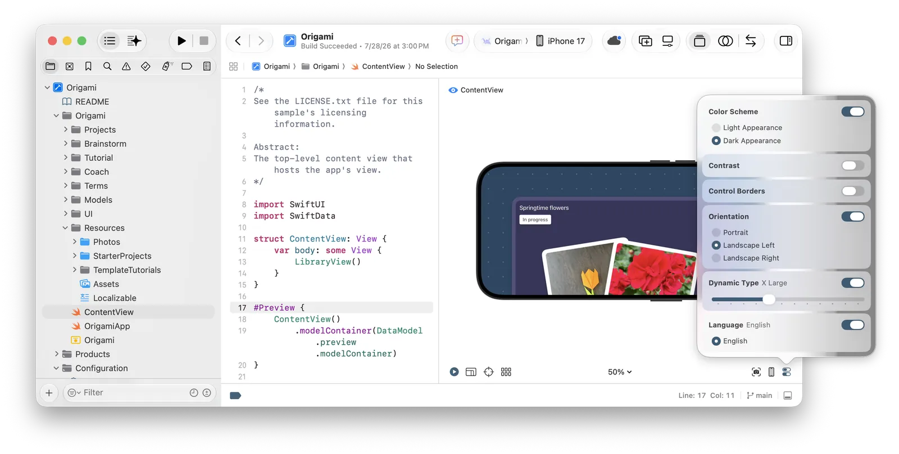
体验评价
做得好
- 入口极轻：不碰工程设置，说一句就开译
- 过程看得见，译文标明是机器翻译
- 改一次译法全局生效，以后也沿用
鸿蒙电脑版可参照
- 已有：demo 29 有说一句加语言、复数、截图上下文、RTL 与截断检查、风格指南
- 还差：资源表里按语言 / 选中行直接生成、上下文摆给人看、母语者回路
| 借什么 | 用在鸿蒙电脑版 | 档位 | 接哪个 demo |
|---|---|---|---|
| 目录里一键生成 | string.json 资源表工具栏放「生成译文」，可只译选中的行 | 跟上 | 29 |
| 上下文摆给人看 | 展开一行就看到：用在哪个页面、相近词条、其他语言怎么译 | 跟上 | 29 |
| 预览里语言叠字号 | 本机窗口一键切语言、字号、深色、断点，一屏对照 人有我优 | 跟上 | 29 · 17 |
| 母语者回路 | 内测包里长按文字即可纠错，回流到资源表，标出谁改的 | 搭车做 | 29 |
来源
Organizer：上线后的问题汇在一屏，选一条就交给 Agent
- 「In Xcode 27, it does more than collect reports. It also helps me act on them.」258 17:25
- 从「知道有卡顿」到「卡在哪、下一步试什么」258 17:47
- 四处新：总览页、存储与动画掉帧指标、指标目标线、一键生成修复建议
理念
01最该看的排最前
- 总览先给影响最大的问题 17:58
- 指标和诊断同一屏
02数字要有参照
- 虚线目标：同类 App、自家历史
- 一眼看出好坏
03看见之后，下一步就在旁边
- 「Open in Project…」与「Generate Recommendations…」并排
- 报告的上下文自动带进 Agent 会话
为什么现在做
场景：线上问题难复现，单个数字没基准
- 「seeing the issue is one thing. Figuring out what to do about it is another.」258 17:35
- 以前指标和诊断分两页，来回跳
技术：Agent 能读线上洞察
- Agent 可读崩溃、卡顿、磁盘写入、能耗、启动问题（Release Notes）
- 读符号化日志 → 找到代码 → 复现 → 修 → 验证 SOTU 55:33
平台：新设计带来新的卡顿
- 新的掉帧指标覆盖 Liquid Glass 与 SwiftUI 动画，不止滚动 258 19:11
- 新增存储指标：数据和包体越来越大
竞争：别人已在做「看到即修」
- Android Studio 已有线上崩溃洞察与 AI 修复建议 社区
- Apple 的优势是数据来自系统，「anonymized and aggregated」SOTU 55:11
场景
A · 从总览到交给 Agent258 17:58
- 打开 Organizer，先落在总览：高影响的排最前
- 图上一个尖峰，下面的诊断直接指向代码
- 新存储指标：1.0 版偏大，压图后回落
- 新掉帧指标：1.3 版有严重卡顿，记一笔
- 目标线对照同类 App 与历史
- 点「Generate Recommendations…」，选工程，和 Agent 来回试
B · 在对话里直接问SOTU 55:18
- 对 Xcode 说「拉出最新版本的 top 崩溃」
- 拿到按次数排序的列表
- 第一条来自上周的更新，说「修掉它」
- 它读日志、定位、复现、修、再验证
交互特点交互 → 给谁 → 解决什么
| 交互 | 给谁 | 解决什么 |
|---|---|---|
| 总览按影响排序 | 已上架的开发者 | 不用猜先看哪页 |
| 指标图与诊断同屏 | 排优先级的人 | 不在两页间跳 |
| 虚线目标：同类 App / 自家历史 | 缺基准的人 | 数字好坏有参照 |
| 趋势与系统分布 | 判断影响面的人 | 问题在不在扩大 |
| 「打开工程」「生成建议」并排 | 修问题的人 | 从报告一步进代码或 Agent |
| 上下文自动带进新会话 | 修问题的人 | 不用复制堆栈 |
| 铃铛订阅回归提醒 | 常驻开发者 | 不开 Organizer 也知道 |
| 对话里直接要数据 | 不想切窗口的人 | Agent 直接读线上洞察 |
截图
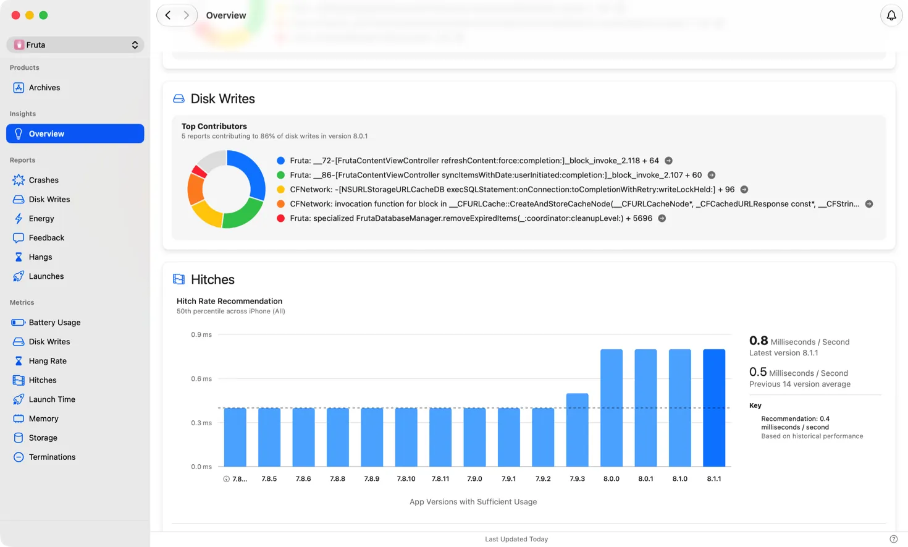
- 磁盘写入：五个主要来源占 86%，每条带箭头直达
- 掉帧：按版本的柱图，虚线是基于历史的建议值
- 右上角铃铛：订阅回归提醒
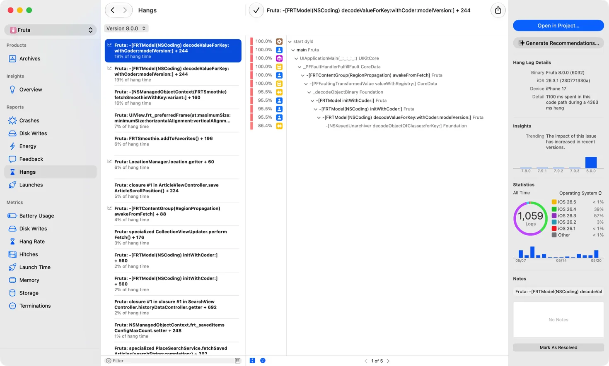
- 左：按卡顿时长排序；中：调用栈
- 右上：「Open in Project…」「Generate Recommendations…」
- 右侧还有趋势（影响在变大）和系统版本分布
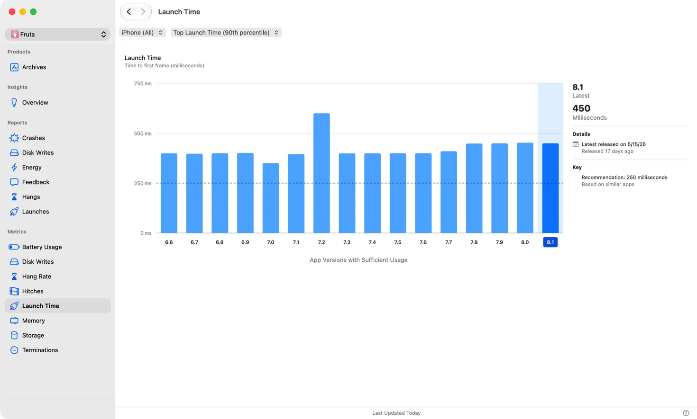
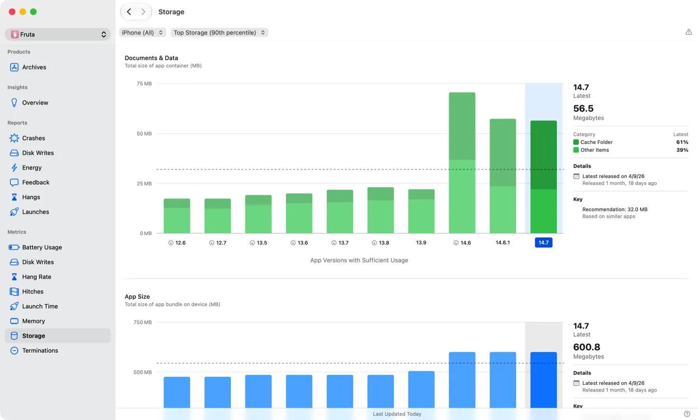
点「Generate Recommendations…」之后的会话界面，Apple 文档暂无配图。
体验评价
做得好
- 一屏看全：尖峰、诊断、目标线在一起
- 一步交接：报告上下文自动进会话
- 两条路都通：点按钮，或直接问 Agent
不足
- 回归提醒门槛高：退化很大且 Xcode 开着才提醒
- 「生成建议」只覆盖五类诊断，指标图本身不能直接交出去 推断
- 并行会话不共享上下文，可能改到同一个文件 社区
鸿蒙电脑版可参照
- 已有：demo 22 冷启动报告、28 冻屏报告、05 就地问，都有「让 Agent 修 → 复测」
- 还没有：线上问题的聚合总览、目标线、回归提醒
| 借什么 | 用在鸿蒙电脑版 | 档位 | 接哪个 demo |
|---|---|---|---|
| 按影响排序的总览 | 线上质量首页：崩溃、冻屏、冷启动、耗电按影响排，点进就是报告 | 主攻 | 22 · 28 |
| 两个按钮并排 | 每份报告右上角：「打开代码」「交给 Agent」，栈与设备信息自动带入 | 跟上 | 28 · 05 |
| 目标线 | 指标图加「同类应用 / 上个版本」虚线 | 搭车做 | 22 |
| 回归提醒 | 新版本变差，实况窗推一条，点开落到报告 人有我优 | 跟上 | 21 · 28 |
来源
Instruments：最重函数、改前改后对比、Swift 并发——卡顿从「猜」变成「证」
- Apple 把它讲成一个循环：「profile, identify, fix, and verify」（What's new in Xcode）
- 三件新东西：Top Functions（最重的函数）、Run Comparison（两次录制直接比）、Swift 并发的执行器轨道
- 修的那一步可以交给 Agent，验的那一步由人看对比
理念
01一个闭环，不是四个工具
- 录 → 找 → 改 → 验，一路不出 Instruments
02先问 CPU 忙还是闲
- 忙：看最重的函数
- 闲却卡：看线程在等什么
03验收靠对比，不靠记忆
- 同一区间、两次录制、红绿一看便知 268 13:13
为什么现在做
技术：Swift 并发难看清
- 从 SwiftUI 里起的任务会继承主线程，和界面更新抢资源 268 18:00
- 需要一条轨道看清谁占着主线程
平台：系统配合
- 执行器轨道要 OS 27 才能完整显示（Release Notes）
- Liquid Glass 动画带来新的掉帧问题（见 Organizer）
竞争：Agent 改得越快，越要会验
- Agent 改代码后，人要一眼看出好了没、新加了什么 推断
- 对比里，Agent 新加的函数直接标红 268 15:09
场景「Profile, fix, and verify」里的两段
A · 套索选择卡顿268 3:24
- 用并发模板开录，复现卡顿
- 按打点区间筛，主线程 CPU 接近 100%
- 火焰图看不出单点 → 切到 Top Functions
- 榜首是运行时函数，交给编码助手改成泛型
- 两次录制选同一区间，点 Compare
- 回退置顶：是 Agent 新加的函数；倒过来看改进
B · 缩略图卡顿268 16:32
- 主线程轨道被缩略图任务排满
- 固定主线程：CPU 满，是任务太长
- 原因：从 SwiftUI 起的任务继承了主线程
- 加一个标注，把任务挪到后台执行器
- 再录一次：任务移走，而且并行了
交互特点交互 → 给谁 → 解决什么
| 交互 | 给谁 | 解决什么 |
|---|---|---|
| 三种看法一键切：调用树 / 火焰图 / 最重函数 | 所有人 | 同一份数据换角度看 |
| Top Functions：左榜单、右调用者 | CPU 忙的卡顿 | 散在各处的开销收拢 |
| Compare：选基线，两次录制同屏 | 改完要验收的人 | 不用两个窗口肉眼比 |
| 红绿着色，变差的排最前 | 同上 | 一眼看出好了没 |
| 点打点区间即筛选 | 要对齐口径的人 | 前后比的是同一段 |
| Swift 执行器轨道 | 用 async 的人 | 看见谁占着主线程 |
| 对比存进文档 | 团队协作 | 结论可留存、可转给别人 |
截图
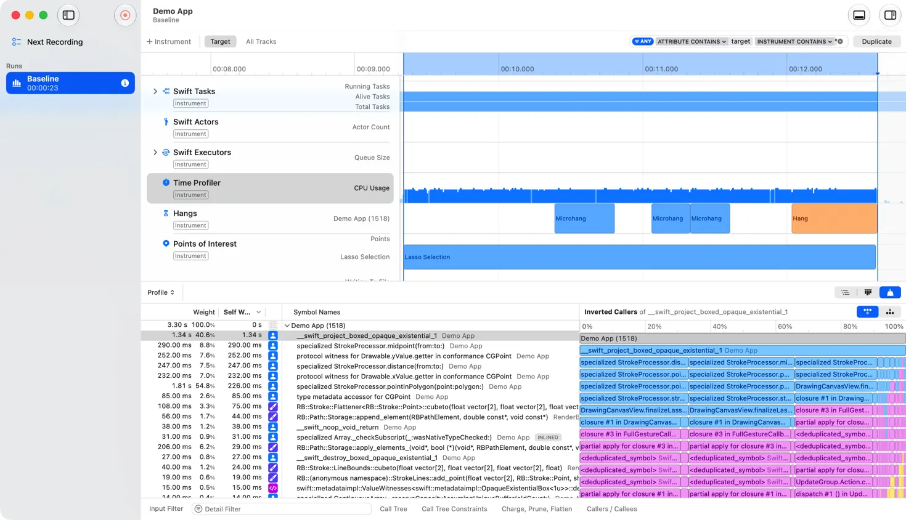
- 上：Swift 任务、Actor、执行器、卡顿、打点区间等轨道
- 下左：按自身耗时排的榜单；下右：榜首函数被谁调用
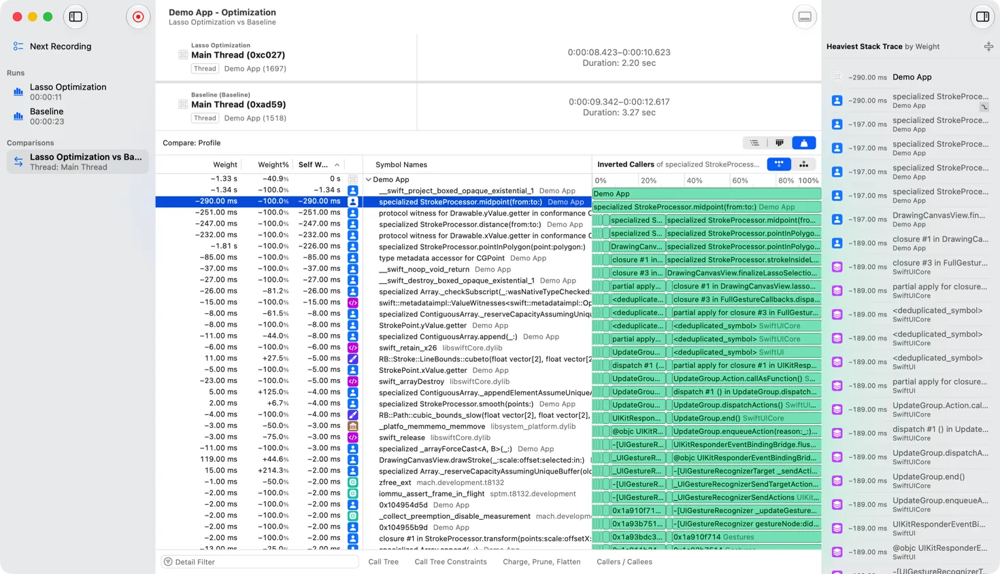
- 左栏：录制与对比都存在同一个文档里
- 上方：两次录制的主线程区间（2.20 s vs 3.27 s）
- 下方：每个函数的差值，绿色是变快
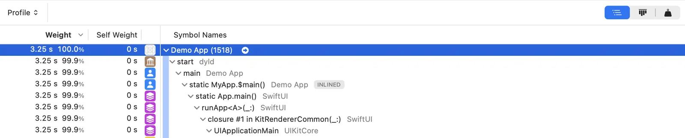
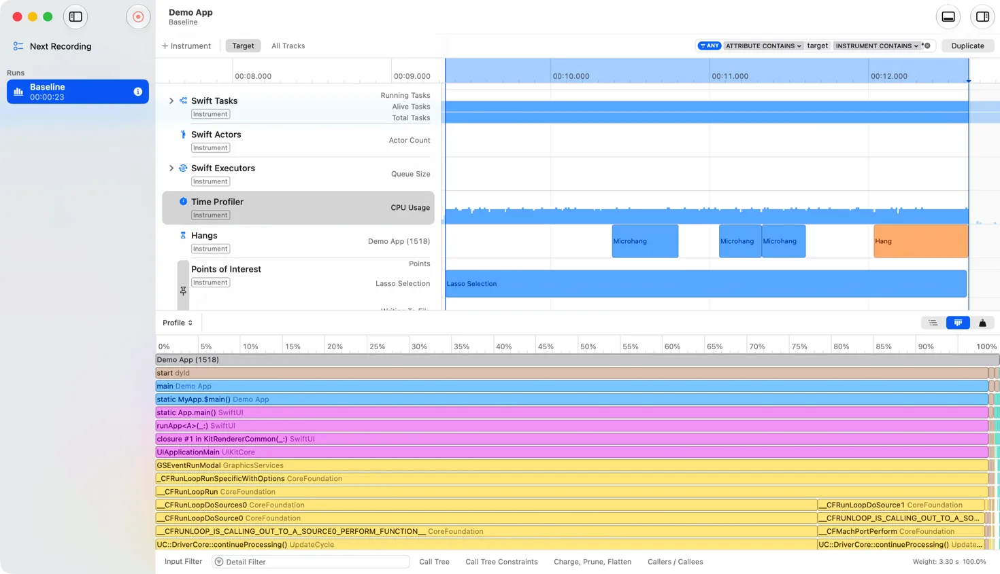
体验评价
做得好
- 同一份样本三种看法，切换不丢上下文
- 对比存进文档，可多份、可分享
- 修完后榜单里没有自家函数，就是验收信号 258 24:11
不足
- 前提多：要 release 构建、要埋好打点 268 26:12
- 榜首常是运行时符号，不懂原理难下手 推断
- 对比只给差值，没说差异是否显著 推断
鸿蒙电脑版可参照
- 已有：demo 03 有最重调用栈、改前改后各跑 N 次判显著；demo 10 有火焰图、内存、TaskPool 并发轨道
- 还差：函数级红绿对比、三种看法一键切、按打点区间对齐、对比结果存档
| 借什么 | 用在鸿蒙电脑版 | 档位 | 接哪个 demo |
|---|---|---|---|
| 红绿对比 | 函数级前后对比；Agent 新加的函数标出来，变差的排最前 | 跟上 | 03 · 10 |
| 三种看法一键切 | 同一份 trace：调用树 / 火焰图 / 最重函数 | 搭车做 | 10 |
| 打点区间当口径 | 前后两次选同一段手势再比；我们已有显著性判断 人有我优 | 跟上 | 03 |
| 主线程上谁在跑 | ArkTS 主线程 / TaskPool / Worker 汇成一条「谁占着 UI 线程」的视图 | 跟上 | 10 |
来源
- Apple
- 268 Profile, fix, and verify · 243 Debug and profile agentic app experiences
- 258 What's new in Xcode 27 · 22:02 Instruments
- 调用树视图 文档 · What's new in Xcode
- Xcode 27 Release Notes · Instruments（Top Functions 与 Run Comparison 首见于 26.4）